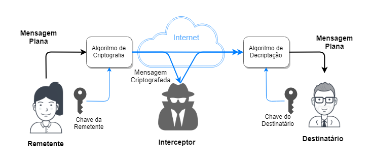
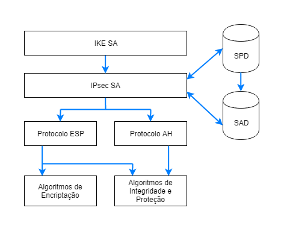
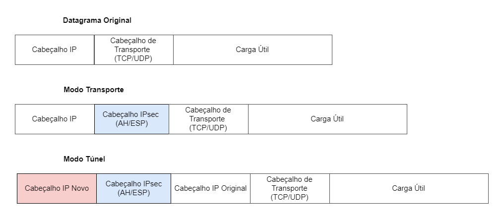

Felipe Ferreira1, Silvia Caroline2, William Macedo1
Redes de Computadores I - 2018.1
1 Engenharia Eletrônica e de Computação
2 Engenharia de Computação e Informação
Departamento de Engenharia Eletrônica
Resumo
Este trabalho aborda o tema de segurança da informação apresentando um estudo sobre o IPsec, um sistema de segurança
da camada de rede do modelo TCP/IP da pilha de protocolos. Apresenta conceitos básicos de criptografia, que servem
como base para os termos que aparecerem por todo restante do texto, como assinatura digital e o próprio ato de criptografar
uma mensagem. Ilustra e define os campos dos protocolos de segurança usados pelo IPsec e seus modos de funcionamento.
Descreve também o funcionamento de seu protocolo de gerenciamento de chaves de segurança. Apresenta algumas questões que
prejudicam a ampla adoção do sistema e cita alternativas mais populares.
1. Introdução
Na pilha de protocolos que regem a rede de computadores, certamente a camada de rede (modelo TCP/IP) é a
mais genérica. Seu único protocolo, o IP (Protocolo da Internet) suporta qualquer protocolo das camadas
adjacentes. Atualmente existe uma variedade de aplicações que em sua base utilizam o protocolo IP
para rotear sua mensagens pela internet e entregar serviços ao usuários. Alterações a atualizações do mesmo
são extremamente evitadas, pois além de possivelmente afetar algumas das inúmeras aplicações existentes,
também implica em alterações no núcleo da rede de computadores, com alterações nos equipamentos dos Fornecedores
de Acesso a Internet (ISPs).
Porém, com o crescimento de aplicações cresceu também a variedade de informações que trafegam pela Rede.
Não tardou para que informações sensíveis (como dados bancários) necessitassem de proteção para trafegar
num ambiente público como a Internet. Após anos de desenvolvimento, o IETF publicou o IPsec (Segurança do
Protocolo de Internet), um sistema de segurança que se mune de algoritmos de criptografia e autenticação
para garantir comunicações sigilosas e confiáveis na camada de rede.
Originalmente o IPsec foi desenvolvido para a sexta versão do Protocolo de Internet (IPv6). Porém, a adoção
do IPv6 mostrou-se muito lenta com o tempo, e o IPsec teve que ser retrabalhado (ainda em seu desenvolvimento)
para ser compatível também com a versão 4 (IPv4). Isto explica algumas incompatibilidades que o sistema apresenta
com NAT (Tradução de Endereço de Rede). Neste texto discute-se conceitos básicos de segurança de informação,
como introdução aos protocolos utilizados pelo IPsec. Após, aprofunda-se a discussão nestes protocolos,
como funcionam, o que oferecem e seus modos de operação. Breves contextualizações estão presentes ao longo do
texto, para melhor compreensão.
2. Conceitos Básicos
Como este texto refere-se a camada de rede, trabalha-se com apenas dois tipos de entidade: hospedeiro e
roteador. Portanto, a menos que seja explicitado, quando fala-se em entidade, subentende-se que
trata-se de qualquer uma das entidades da camada de rede.
Considerando que duas entidades queiram se comunicar de forma segura através de um meio público como a
Internet, segundo [1], as seguintes propriedades são desejáveis:
Confidencialidade - apenas remetente e destinatário tem acesso a mensagem descodificada
Integridade da Mensagem - garantia de que a mensagem foi inalterada durante a transmissão
Autenticação de Ponto Final - remetente deve confirmar a identidade do destinatário e vice-versa
Segurança Operacional - o ambiente em que a mensagem é escrita deve estar bem protegido. Esta
característica não envolve o IPsec, e está além do escopo deste trabalho. Porém, é característica
fundamental de uma comunicação segura.
2.1. Criptografia
Uma mensagem sem codificação, tem seu conteúdo em texto plano (também conhecido como texto claro ou
aberto). Uma mensagem que passa por um algoritmo de criptografia passa a ter um conteúdo em texto cifrado,
ininteligível para um interceptor na transmissão. A informação da mensagem só é recuperada após o processo de
decriptação.
Técnicas e algoritmos de transmissão são publicados e padronizados na Internet (por exemplo as RFCs 1321,
3447, 2420). Independente da técnica usada, uma mensagem criptografada geralmente só pode ser descriptografada
com uma chave de segurança. Esta chave (que pode ser a mesma para ambos ou exclusiva de cada um) serve
de parâmetro de entrada para que, junto a mensagem cifrada, o algoritmo de decriptação possa transformar a
mensagem em texto cifrado em uma mensagem em texto plano. A figura 2.1.1 ilustra os
componentes básicos de um sistema de criptografia.

Figura 2.1.1 - Esquema geral de uma comunicação criptografada que é interceptada por um invasor.
Adaptada de [1].
2.2. Funções de Hash criptográficas
Funções hash mapeiam dados de comprimento variável em uma cadeia de dados de comprimento fixo. Ou seja,
uma mensagem "m" de tamanho x é mapeada em H(m) de tamanho fixo K. Uma função hash criptográfica é especial pois,
dadas duas mensagens diferentes m1 e m2, H(m1) sempre será diferente de
H(m2).
Funções hash criptográficas são usadas para atender a propriedade de integridade da mensagem em uma
comunicação segura, pois caso a mensagem seja alterada no meio do caminho, será impossível que o receptor
reproduza o mesmo hash desconhecendo a mensagem em texto plano e a função hash criptográfica utilizada.
Algoritmos de hash criptografados mais utilizados são o MD5[RFC 1321] e o SHA-1[FIPS, 1995].
2.3. Código de Autenticação de Mensagem
Nos cenários descritos, ainda é possível q o invasor crie uma mensagem qualquer, gere um hash válido e envie
para um receptor, falsificando sua identidade como remetente.
Portanto, emissor e receptor compartilham um segredo chamado de chave de autenticação de mensagem. Essa chave
é uma sequência de bits que é concatenada à mensagem original para o cálculo da função hash criptográfica.
O receptor, que possui o código de autenticação, calcula o hash da mensagem recebida concatenada de seu código.
Se o valor do hash recebido for igual ao do hash calculado, a mensagem é autêntica. A figura 2 ilustra esse
processo.
Sistema de empregando o código de autenticação de mensagem para garantir
a integridade da mensagem (imagem adaptada de [1])
Como ilustrado, a mensagem enviada pela Internet tem um campo com o valor do hash criptográfico resultante
da soma da mensagem com o segredo. Ao receber a mensagem, o destinatário soma o segredo ao campo da mensagem e
recalcula o hash. Finalmente, o receptor compara com o valor do hash recebido, e reconhece se a mensagem foi
alterada ou não.
2.4. Assinatura Digital
Têm-se até aqui, garantias de confidencialidade e integridade. O último passo é identificar um usuário.
Ou seja, garantir que a mensagem válida foi enviada pelo usuário X e somente ele poderia ter enviado essa
mensagem. Neste caso, uma alternativa é usar um par de chaves (uma pública e uma privada). A chave pública
é conhecida por todos, inclusive pelo destinatário.
No processo conhecido como Assinatura Digital, o remetente "assina" sua mensagem utilizando sua chave privada
e o hash discutido na seção 2.2 num algoritmo criptográfico. Esta nova cadeia de caracteres
é enviada no lugar do hash, junto com a mensagem, para o destinatário. Para autenticar o remetente, o destinatário
executa a seguinte rotina:
Utiliza a chave pública do remetente para descriptografar o hash.
Utiliza a mensagem recebida para recalcular o hash
Compara o hash calculado com o hash obtido com a chave pública do remetente
Compara os dois hashes.
Apenas o remetente pode ter enviado esta mensagem, pois ao descriptografar o hash recebido com a chave
pública, o destinatário concluiu que aquele era um hash válido gerado a partir da mensagem anexada. Apenas
o destinatário, que conhece a chave privada, pode gerar uma cadeia de caracteres que, ao ser descriptografada
com sua chave pública, chega ao hash criptográfico garantidor da integridade da mensagem
3. Protocolos do IPsec
O Protocolo de Segurança da Internet (de agora em diante, IPsec) é um modelo de comunicação
segura de ponta a ponta através da Internet. Por ser implementado junto ao Protocolo da Internet (IP) na
camada de rede, é um sistema de segurança transparente às outras camadas da pilha de protocolos, ou seja,
o IPsec não prejudica o suporte já oferecido pelo IP aos diversos protocolos das camadas de transporte
e enlace. Inicialmente desenvolvido para IPv6 (a sexta versão do protocolo de internet), foi adaptado para
ser compatível com IPv4 devido ao lento crescimento do primeiro.
Foi desenvolvido pela Força-Tarefa de Engenharia da Internet (IETF), um grupo aberto e internacional
que desenvolve e promove padrões para a Internet. Todos os padrões e protocolos publicados encontram-se
organizados em documentos técnicos conhecidos como RFCs ("Pedidos de Comentários", em tradução livre).
A aplicação mais comum do IPsec é em Redes Privadas Virtuais (VPNs), um serviço de tunelamento que garante
integridade e sigilo de informações enviadas pela Internet. Existem diferentes tipos de VPNs, implementadas
com alternativas ao IPsec, como os protocolos SSL/TLS (RFC 5246), PPTP(criado pela Microsoft, obsoleto) e L2TP
(RFC2661), que pertencem a outras camadas da pilha de protocolos.
No exemplo da figura 3.1, a sede de uma instituição qualquer se comunica
com sua filial através da Internet. Seu roteador com suporte a IPsec, criptografa a mensagem (carga útil) e
adiciona um cabeçalho IPsec, que será usado pelo Roteador da filial para descriptografar o datagrama (arquitetura
roteador a roteador). Um cliente remoto (hospedeiro) também pode utilizar de uma VPN para se comunicar seguramente
com a filial (arquitetura hospedeiro a roteador).
Figura 3.1: Rede Virtual Privada (VPN). Adaptado de [1].
É interessante notar na figura como o IPsec é transparente tanto para a os roteadores da Internet, que enxergam
a mensagem como um datagrama comum com um cabeçalho IP roteável, quanto para os dispositivos na redes locais,
que recebem e enviam pacotes descriptografados.
O IPsec utiliza três protocolos para cumprir sua função:
Cabeçalho de Autenticação (AH), que provê autenticação e integridade.
Encapsulamento de Dados de Segurança (ESP), que provê além de confidencialidade, além de
autenticação e integridade.
Troca de Chaves da Internet (IKE), que auxilia os protocolos acima estabelecendo um canal
seguro para a troca de chaves entre remetente e destinatário.
Vale citar os principais algoritmos de criptografia e autenticação AES128, HMAC-MD5 e HMAC-SHA1,
todos usados pelos protocolos de segurança listados acima.
A figura 3.2 ilustra o sistema IPsec. A comunicação se inicia com uma conexão lógica,
definida pelo protocolo IKE e chamada de Associação de Segurança IKE ou simplesmente SA IKE.
Nela, acontecem requisições e respostas, ou seja, trocas de informações de controle e segurança,
como o Grupo Diffie-Hellman (um segredo compartilhado para gerar as chaves de segurança - seção
3.2.1) que servirá para estabelecer outra conexão lógica, a SA IPsec.
Na SA IPsec, é negociado o algoritmo de criptografia, parâmetros de autenticação e outras políticas de
segurança. Cada entidade com suporte a IPsec pode adotar todas ou algumas das soluções de segurança oferecidas
pelo IPsec. Resumindo, a SA IPsec existe para que as parte de uma comunicação criptografada se entendam, dando
oportunidade para que as entidades combinem o código das suas mensagens sigilosas.
Todos os parâmetros negociados durante a SA IPSec são guardados em bancos de dados nomeados SPD (Banco de Dados
de políticas de Segurança) e SAD (Banco de Dados de Associações de Segurança). Esses bancos são sempre
consultados pela entidade para que ela saiba como manipular um datagrama IPsec (seção 4).
Finalmente, com as regras estabelecidas e os banco de dados consultados ou atualizados, chega a etapa da
comunicação em si, em que a troca da informação acontece. Neste momento, o remetente se utiliza de um dos protocolos
(AH ou ESP) ou ambos, para proteger o mensagem e gerar o datagrama que será enviado para o destinatário.
Uma vez que o ESP provê as mesmas funcionalidade do AH, o segundo tem caído em desuso.

Figura 3.2: Estrutura Geral do IPsec. Adaptada de [11].
Alguns ataques que são evitados com o uso dos protocolos IPsec são:
Ataques de repetição: um atacante que tem acesso a um fluxo de datagramas injeta datagramas
modificados. Com o IPsec, os datagramas possuem um digito verificador de sequência e um
algoritmo anti-repetição.
Particionamento de pacotes cifrados: o atacante obtém partes de pacotes cifrados
e monta um pacote que pode ser aceito pelo destinatário. Existem campos no cabeçalho
IPsec que verificam a integridade do pacote
"Sniffer": quando o atacante obtém os pacotes que trafegam na rede em texto plano, obtendo
informações que podem ser sigilosas. No IPsec, é possível criptografar as mensagens. Mesmo que
um atacante obtenha os pacotes, não terá acesso a informação, pois a mensagem encontra-se cifrada.
3.1. Cabeçalho de Autenticação
O Cabeçalho de Autenticação (AH) é um protocolo que provê integridade e autenticidade de uma
mensagem. O datagrama original é modificado, ganhando um cabeçalho de autenticação que possui os campos
vistos no lado esquerdo da figura 3.2.1.
As informações contidas em cada campo do cabeçalho de autenticação são listadas abaixo:
Próximo Cabeçalho: Campo de 8 bits que indica o tipo de pacote (carga útil) subsequente ao cabeçalho
de autenticação. Sendo o cabeçalho AH um cabeçalho da camada de rede, o cabeçalho subsequente pertence
a um protocolo da camada imediatamente superior, o que no modelo TCP/IP é a camada de transporte. Neste caso
o próximo cabeçalho poderia ser TCP ou UDP (cada cabeçalho possui um digito correspondente, que o representa
neste campo. O protocolo TCP por exemplo, é representado pelo dígito 8).
Tamanho do Cabeçalho: Campo de 8 bits que especifica o tamanho do cabeçalho AH
Reservado: Campo de 16 bits reservados para atualizações futuras. Atualmente é preenchido com zeros.
Índice de Parâmetros de Segurança (SPI): Campo de 32 bits usado pelo receptor para identificar
a SA do datagrama recebido.
Número de Sequência: Campo de 32 bits usado para identificar o datagrama e proteger o receptor de
ataques de repetição.
Valor Verificador de Integridade (ICV): É utilizado para verificar a integridade e autenticidade do
datagrama. Como é gerado a partir da encriptação da carga útil, tem tamanho variável e, portanto, possui um
enchimento para ser múltiplo de 32 bits. Seu cálculo leva em consideração o cabeçalho IP.
No AH, a autenticação do remetente é feita através de uma assinatura digital, conforme discutido na seção
2.4.
3.2. Encapsulamento de Dados de Segurança
O protocolo ESP oferece integridade, autenticação e sigilo. A autenticação do ESP é diferente da realizada
pelo AH, pois não inclui o cabeçalho IP, apesar de encapsulá-lo no Modo Túnel (seção 5.2).
O AH protege parte do cabeçalho IP, campos não mutáveis que não são modificados pelos roteadores do meio do
caminho (caso protegesse esses campos mutáveis, seu campo ICV chegaria ao destinatário inválido).
O campos do cabeçalho ESP são análogos aos do AH, com as seguintes ressalvas:
Enchimento (SPI): Campo com tamanho entre 0 a 255 bytes. Permite a utilização de
algoritmos de criptografia em blocos, dividindo o datagrama em blocos e enchendo estes para que
tenham tamanho múltiplo do tamanho definido pelo algoritmo.
Tamanho do Enchimento: Campo de 8 bits que indica o tamanho do enchimento usado na
operação acima.
Próximo Cabeçalho: Se difere do AH por apontar para trás, pois o campo é lido após
a carga útil (figura 3.2.1).
Valor Verificador de Integridade (ICV): Semelhante ao do AH, porém, seu cálculo não
leva em conta o cabeçalho IP.
Figura 3.2.1: Comparação entre os cabeçalhos AH (esquerda) e ESP (direita). Notar a direção
para a qual o campo Próximo Cabeçalho aponta em cada caso. Vale citar que a carga útil NÃO faz parte
do cabeçalho. Adaptada de [13]
3.3. Troca de Chaves da Internet
Protocolo mais conhecido por sua sigla, IKE, foi desenvolvido pelo IETF como componente do IPsec para
gerecimento da troca de chaves de segurança, estando atualmente na versão 2 (IKEv2). Em teoria, uma conexão segura por
IPsec pode ser configurada sem o IKE. Porém, em um cenário real, um servidor de VPNs (principal aplicação do IPsec)
lida com diversas comunicações simultâneas e, por consequência, é inviável um gerenciamento manual de chaves.
Sua função no IPsec é negociar, criar e gerenciar Associações de Segurança (SA). Estas são conexões lógicas
em que as entidades estabelecem parâmetros de segurança para a comunicação que está para acontecer (por exemplo,
se identificam e autenticam, trocam chaves de segurança e negociam algoritmos de autenticação e criptografia).
Todo este processo encontra-se organizado em duas fases:
Fase 1: Negociação de um canal seguro para a negociação das SAs
Fase 2: Negociação das SAa do IPsec
As fases 1 e 2 são bastante similares, visto que ambas negociam parâmetros para uma comunicação futura. Uma
diferença imediata é que parte da fase 1 acontece sem qualquer tipo de proteção. As trocas de mensagem passam a
ter alguma proteção após a troca de Grupos Diffie-Hellman (um segredo compartilhado usado para gerar chaves de
segurança). Outra diferença é que a fase 1 é mais custosa computacionalmente que a fase 2, por lidar com a
geração de chaves criptográficas. Como vimos, um servidor VPN em grande escala mantém diversas conexões
simultâneas com outras entidades IPsec, lidando com a criação, manutenção e encerramento de diversas SAs.
Entidades que já trocaram chaves de segurança geralmente não precisam refazer a fase 1.
Em resumo, o IKE mune três funcionalidades:
Negocia quais protocolos, algoritmos e chaves serão usadas.
Autentica remetente e destinatário.
Gerencia a criação e manutenção da chaves de segurança.
3.3.1. Fase 1
Como vimos, o propósito da fase 1 é gerar um canal seguro para as negociações que acontecem na fase 2. Esta
negociação é bidirecional, ou seja, as "regras" negociadas devem ser iguais para ambos. Esta fase pode proceder
de dois modos: a principal, em que as negociações tomam três pares de mensagens, e o agressivo,
que conclui a negociação com metade do número de mensagens anterior. Apesar de mais rápido, o modo agressivo
é menos seguro, pois as entidades enviam parte dos parâmetros sigilosos (como suas identidades) em texto plano.
Basicamente, o processo de negociação da fase 1 se dá como se segue:
Negociação do algoritmo de criptografia, do algoritmo de proteção de integridade, do método de autenticação
e de um segredo compartilhado (Grupo Diffie-Hellman).
Troca de identidades e certificados (ambos criptografados)
O par de entidades se autentica
Ao fim da fase um, está criado um canal seguro para a negociação do parâmetros de segurança do comunicação
IPsec
3.3.2. Fase 2
Nesta fase, são negociados os parâmetros da SA, que como veremos na seção 4 estabelece
os parâmetros de segurança para a comunicação protegida. Os parâmetros negociados na fase 2 são naturalmente
semelhantes aos da fase um, com a diferença de que nesta fase não é preciso gerar mais chaves de criptografia.
Com isso, há um economia de custo computacional, pois a fase 2 pode ser repetidas várias vezes ao custo de
apenas uma fase um.
Os itens negociados na fase 2 são:
O algoritmo de criptografia para proteger os dados;
Um algoritmo de hash para assinatura digital;
Um método de autenticação para assinar o hash;
Especificação da função pseudorrandômica usada como base para algoritmos criptográficos.
4. Associação de Segurança
A SA IPsec, por sua vez, é uma conexão lógica unidirecional, ou seja, caso duas
entidades necessitem trocar datagramas IPsec, duas SAs serão necessárias (uma para cada direção), como ilustra
a figura 4.1. Uma SA contém informações sobre origem
e destino de um datagrama, o tipo de criptografia a ser usada a chave de criptografia, o tipo de verificação
de integridade (seção 2), a chave de autenticação e um índice que identifica a SA
(Índice de Parâmetros de Segurança - SPI). Para guardar todas essas informações, cada entidade mantém dois
bancos de dados, o de políticas de segurança (SPD) e o de SAs (SAD).
Figura 4.1: Uma ilustração da conexão lógica e unidirecional conhecida por SA.
Adaptada de [10]
O SAD é consultado pelo remetente quando este precisa enviar um datagrama de acordo com o estabelecido
previamente com o emissor. O SAD provê o SPI, as chaves e os algoritmos que citamos anteriormente. O SAD
diz ao emissor como construir o datagrama IPsec que é esperado pelo receptor. Uma SA IPsec é unicamente
identificada pelo SPI, o endereço IP de destino e o protocolo de segurança (AH ou ESP).
O SPD funciona como uma espécie de firewall. Ele identifica os datagramas pelo remetente, destinatário e
tipo de protocolo de transporte (UDP, TCP, ICMP, etc) e especifica se devem ser convertidos em datagramas IPsec,
ou não. Caso o sejam, consultam o SAD. Também especifica quais datagramas devem ser descartados, quais devem ser
encaminhados ou aceitos mesmo sem proteção IPsec.
"De certa forma, as informações em um SPD indicam 'o que' fazer com um datagrama que está chegando; as
informações no SAD indicam 'como' fazer isso"[1].
5. Modos de Operação
Os dois protocolos de segurança do IPsec operam em dois modos: Transporte e
Túnel. O primeiro protege o pacote da camada de transporte e mantém o cabeçalho IP
original. O segundo encapsula o datagrama completamente e gera um novo cabeçalho IP. Dependendo
da arquitetura de implementação do IPsec (hospedeiro a roteador, roteador a roteador ou hospedeiro
a hospedeiro), um modo é mais usado. Por exemplo, o modo transporte é mais usado na arquitetura
hospedeiro a hospedeiro, pois este modo não altera o endereço de destino. O modo Túnel
é mais usado em arquitetura roteador a roteador, protegendo o datagrama apenas fora das redes
locais.

Figura 5.1: O datagrama original e nos modos transporte e túnel.
Como dito anteriormente (seção 3.1), o protocolo AH pode proteger campos não mutáveis do
cabeçalho IP. Neste sentido, a figura 5.1 pode confundir o leitor, pois dá a
ideia que o cabeçalho protege apenas os campos à sua direita. Mais detalhes são dados nas subseções seguintes.
5.1. Modo Transporte
Neste modo, mantem-se o cabeçalho IP original e insere-se um cabeçalho do protocolo de
segurança (AH ou ESP) antes do cabeçalho do protocolo de transporte. Naturalmente, o protocolo ESP é
mandatório caso sigilo seja um requisito, pois é o protocolo que oferece criptografia.
Detalhe importante citado no início desta seção, o protocolo AH pode proteger alguns campos não mutáveis
do cabeçalho IP. Os cabeçalhos mutáveis para o protocolo AH são:
Tipo de serviço - indica o tratamento dado pelos roteadores ao longo do percurso do datagrama.
Flag - controle da fragmentação do objeto.
Offset de Fragmento - indica a posição dos fragmentos do datagrama.
Tempo de vida (TTL) - reduzido por cada roteador do percurso. Ao chegar a zero, o pacote é descartado.
Soma de Verificação do Cabeçalho ("Header Checksum") - campo de proteção contra erros. Muda a cada roteador,
pois seu calculo leva em conta o TTL.
É importante notar que os campos que indicam os endereços de destino e origem são protegidos. Isso impede que
o modo transporte com protocolo AH funcione com NAT (Tradução de Endereço de Rede), sistema cujo a ideia básica
é justamente alterar o endereço de origem (de um IP não roteável para um IP roteável). Como o AH protege esse
campo, o NAT falha. Segundo [2], esta incompatibilidade (que também acontece com o
ESP no modo túnel) é intencional, pois o IPsec foi idealizado para ser um recurso do IPv6, que evolui muito
lentamente desde sua publicação, em grande parte graças ao NAT. A intenção é que o IPsec seja um incentivo
para a transição de IPv4 para IPv6. Porém, o geralmente acontece na prática é o uso de NAT com outras opções
de segurança (que é geralmente a solução mais simples e barata).
A figura 5.1.1 mostra o datagrama no modo transporte dos dois protocolos de segurança.
Também indica os campos que são protegidos com criptografia e os que são protegidos com autenticação e integridade.
Figura 5.1.1: Estrutura de um datagrama IP no modo transporte. Acima, o datagrama protegido pelo AH.
Abaixo, o datagrama protegido pelo ESP. Notar que o protocolo AH protege todo o datagrama.
5.2. Modo Túnel
Neste modo todo o datagrama é protegido e um novo cabeçalho IP é inserido, com endereço de destino sendo
uma entidade com suporte a IPsec. Ou seja, neste caso o destinatário final da mensagem não necessariamente
oferece suporte a IPsec, assim como vimos na figura 3.1. O modo túnel é geralmente usado
na arquitetura roteador a roteador, em que considera-se que atrás do roteador encontra-se um rede local segura.
Também no modo túnel, como o cabeçalho IP original é protegido, evita-se análise de tráfego, ou seja, há um
sigilo quanto a natureza da comunicação. Simplificando: o cabeçalho IP original contém os endereços de origem e
destino da mensagem, enquanto o novo cabeçalho IP contém os endereços dos pontos de acesso das redes
locais protegidas.
Figura 5.2.1: Protocolos no modo túnel.
6. Considerações Finais
O IPsec é um protocolo que opera na camada de rede e possibilita uma comunicação segura entre dois terminais
da Rede, sendo que uma comunicação segura possui três requisitos básicos: integridade, autenticidade e
confidencialidade. O IPsec se utiliza do protocolo IKE para troca e gerenciamento de chaves entre remetente e
destinatário, assim como para estabelecimento algoritmos e protocolos que serão utilizados na troca de mensagens.
Os dois protocolos de segurança utilizados são o AH e o ESP. O primeiro provê apenas integridade e autenticidade
enquanto o segundo garante também confidencialidade. O AH é o único protocolo que protege o cabeçalho IP (porém,
no modo túnel, o protocolo ESP encapsula o cabeçalho IP original).
Ambos os protocolos possuem dois modos de operação: Transporte, em que cabeçalho IP original é mantido e o
pacote da camada de transporte é encapsulado; e Túnel, em que todo o datagrama é encapsulado pelo protocolo de
segurança e um novo cabeçalho IP é gerado.
O IPsec é um protocolo que fornece uma tecnologia poderosa em termos de segurança da informação
que trafega pela Internet. Porém, possui vários arranjos diferentes, muitas opções de configuração e sofre
críticas tanto no que diz respeito a sua possível insegurança (quanto mais simples e robusto, mais seguro um
sistema é) quanto pela sua incompatibilidade com NAT. Autores como [1], [2] e [15] argumentam que o IPsec
seria melhorado com a retirada do protocolo AH e alteração do protocolo ESP para opcionalmente proteger
campos não mutáveis do cabeçalho IP. Também argumentam que o modo transporte não tem razão de ser, pois
o modo túnel pode atender às mesmas finalidades (com um pequeno custo de um cabeçalho IP a mais).
Questões e Respostas
1 -Quais os principais protocolos de segurança do IPsec? Quais são suas características principais?
Cabeçalho de Autenticação (AH) - protocolo que oferece serviços de autenticação da e verficação de integridade
da mensagem. Protege campos não mutáveis do cabeçalho IP. Não oferece o serviço de criptografia.
Encapsulamento de Dados de Segurança (ESP): Oferece autenticação (da mensagem e do emissor), verificação
de integridade e sigilo (através de criptografia). Não protege o cabeçalho IP.
2- Qual objetivo do algoritmo Diffie-Hellman utilizado pelo protocolo IKE?
Possibilitar que duas entidades troquem segredos de forma sigilosa em um canal inseguro. Esse segredo é usado
posteriormente pelo IKE para autenticar as entidades entre si e encriptar mensagens da etapa negociação de parâmetros
de segurança do IPsec.
3- Quais a principal crítica feita ao IPsec?
Sua complexidade. Afirma-se que por ter muitas configurações, pode possuir também várias inconsistências, que
servem como brechas para ataques.
4- Porque o IPsec é, em muitas configurações, incompatível com o NAT?
Seus protocolos de segurança protegem campos do cabeçalho IP, que são alterados pelo NAT. O NAT é um sistema
que permite que várias entidades em uma mesma rede local (cada uma com um IP não roteável) utilize apenas um IP
público para conexão com a Internet. Como o IPsec foi idealizado como um recurso exclusivo do IPv6, que teve seu
avanço atrasado pelo NAT, afirma-se que essa incompatibilidade é intencional.
7. Referências
[1] KUROSE, James F. Redes de Computadores e a Internet - Uma abordagem Top-Down, 6ª Edição. Pearson Education Índia, 2014.
[2] PERLMAN, Radia; KAUFMAN, Charlie; SPECINER, Mike. Network security: Private Communication in a Public World, 2ª Edição. Pearson Education Índia, 2016.
[3] KENT, S.; SEO, K. RFC 4301 "Security architecture for the internet protocol". Disponível em https://tools.ietf.org/html/rfc4301, 2005.
[4] KENT, S. RFC 4302 “IP Authentication Header”. Disponível em http://tools.ietf.org/html/rfc4302, 2005.
[5] KENT, S. RFC 4303 "IP Encapsulating Security Payload (ESP)". Disponível em http://tools.ietf.org/html/rfc4303, 2005.
[6] FRANKEL, S.; KRISHNAN, S. RFC 6071 "IP Security (IPsec) and Internet Key Exchange (IKE) Document Roadmap". Disponível em https://tools.ietf.org/pdf/rfc6071, 2011.
[7] KIVINEN, T., HOFFMAN, P., KAUFMAN, C., NIR, Y., ERONEN, P. RFC 7296 "Internet Key Exchange Protocol Version 2 (IKEv2)". Disponível em https://tools.ietf.org/pdf/rfc7296, 2014.
[8] FRANKEL, S.; KENT, K.; LEWKOWSKI, R.; OREBAUGH, A. D.; RITCHEY, R. W.; SHARMA, S. R. Guide to IPSec VPNs. NIST Special Publication, v. 800, 2005.
[9] OPPLIGER, R. Security at the internet layer. Computer, v. 31, n. 9, p.43{47, 1998.
[10] CAMILO, B. D. C. V. Análise da sobrecarga do ipsec no mapeamento de redes virtuais. 2015. (Projeto Final de Graduação) - Universidade Federal do Rio de Janeiro, 2015.
[11] ALSHAMRANI, H. Internet Protocol Security (IPsec) Mechanisms. International Journal of Scientific & Engineering Research, v. 5, n. 5, p.85{87, 2014.
[12] RICCI, B. Rede Segura: VPN Linux, 1ª Edição. Ciência Moderna, Rio de Janeiro, 2007.
[13] FRIEDL, S. J. An Illustrated Guide to IPsec. Disponível em http://www.unixwiz.net/techtips/iguide-ipsec.html, acessado em maio de 2018
[14] BRAGNETTO, L. F. B., da SILVA, S. C., BARBOSA, L. A. M. IPsec - Segurança de Redes, 2003. Disponível em http://www.braghetto.eti.br/files/IPSec%20-%20Versao%20Final.pdf. Acessado em 18 de maio de 2018.
[15] FERGUSON, N.; SCHNEIER, B. A cryptographic evaluation of IPSec. Counterpane Internet Security, Inc, v. 3031, p. 14, 2000.